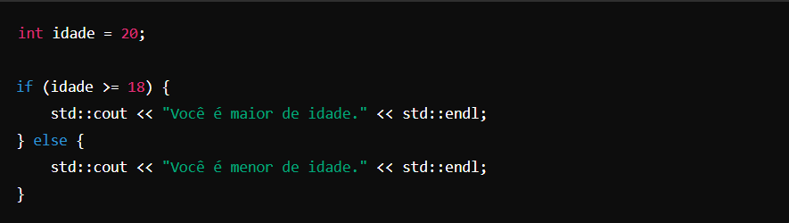
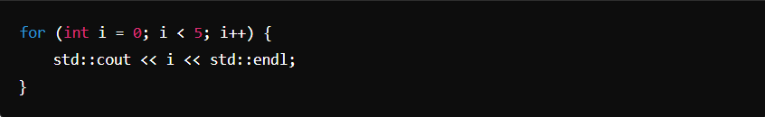
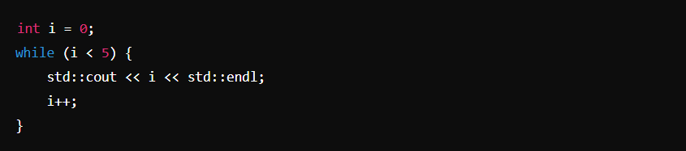
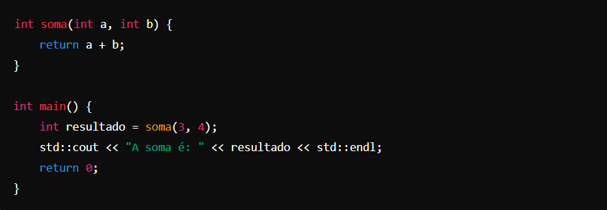
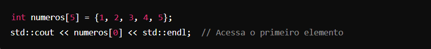
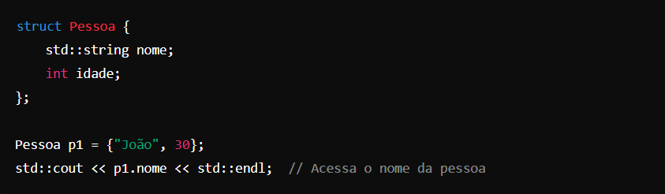
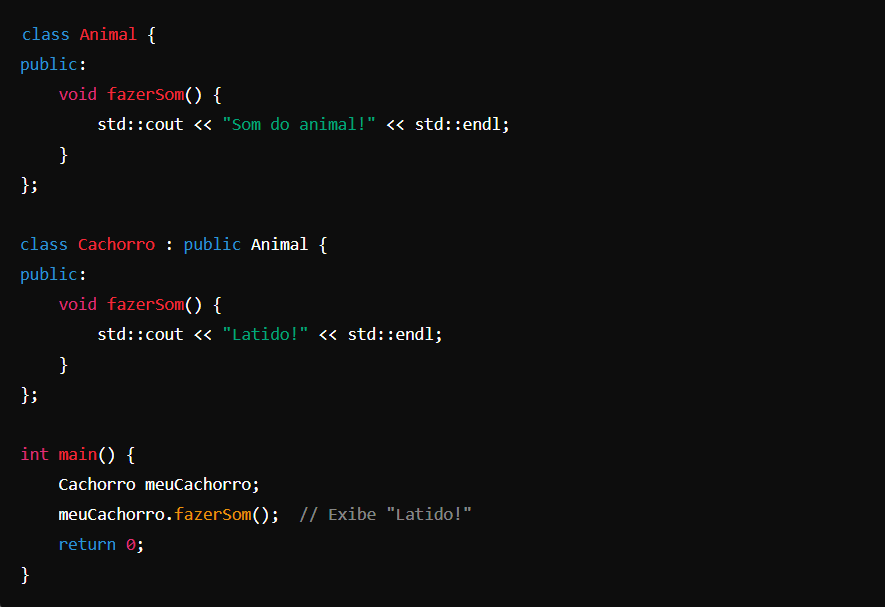
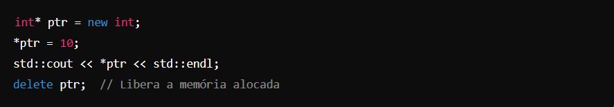
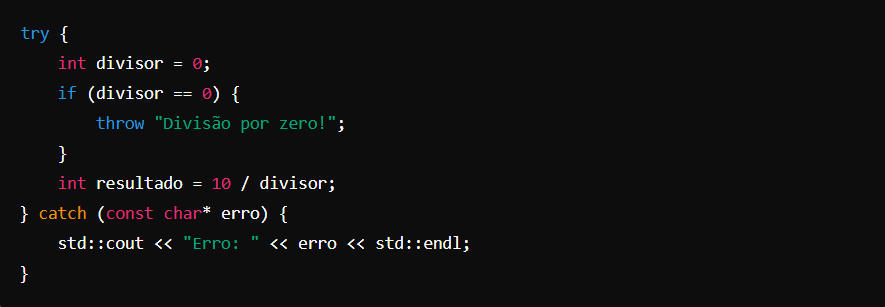

C ++ -
A lógica de programação em C++ segue princípios fundamentais similares a outras linguagens de programação, mas com características específicas que a tornam poderosa para o desenvolvimento de software de alto desempenho. A seguir, estão os principais elementos da lógica de programação em C++:
1. Sequência
Como em outras linguagens, as instruções em C++ são executadas na ordem em que aparecem,
de cima para baixo, a menos que sejam alteradas por estruturas de controle.
2. Estruturas Condicionais
C++ utiliza if, else if, else, e switch para tomar decisões baseadas em condições.
Essas estruturas permitem que o código execute diferentes
blocos dependendo do valor de variáveis ou expressões.

3. Laços de Repetição
C++ oferece várias estruturas de laço, como for, while, e do...while, que permitem repetir blocos de código.
For Loop: Usado para iterar sobre uma sequência ou repetir um bloco de código um número específico de vezes.

While Loop: Executa um bloco de código enquanto uma condição for verdadeira.

4. Funções
Funções em C++ permitem a modularização e reutilização de código. Podem ser definidas fora da função main() e
chamadas de qualquer lugar do programa.

5. Manipulação de Dados e Estruturas de Dados
C++ suporta vários tipos de dados (como int, float, double, char) e estruturas de dados mais complexas,
como arrays, structs, e classes.
Array: Coleção de itens de mesmo tipo, acessados por índices.

Struct: Agrupamento de variáveis sob um único nome, permitindo a criação de tipos compostos.

6. Programação Orientada a Objetos
C++ é uma linguagem orientada a objetos, permitindo a criação de classes, objetos, herança, polimorfismo e encapsulamento.

7. Manipulação de Ponteiros e Memória
C++ dá ao programador controle sobre a memória, permitindo manipular diretamente endereços de memória com ponteiros.
Isso é poderoso, mas requer cuidado para evitar erros como vazamentos de memória.

8. Manipulação de Exceções
C++ usa try, catch, e throw para tratar exceções, permitindo que o código lide com erros de forma controlada.

9. Compilação e Vinculação
C++ é uma linguagem compilada, o que significa que o código fonte é transformado em código binário executável pelo compilador.
A vinculação (linking) ocorre quando o compilador junta todos os arquivos de código e
bibliotecas necessários para criar um executável final.
Esses elementos formam a base da lógica de programação em C++, capacitando o desenvolvimento de aplicações robustas,
de baixo nível (como drivers e sistemas operacionais) a alto nível (como jogos e aplicações de software complexas).